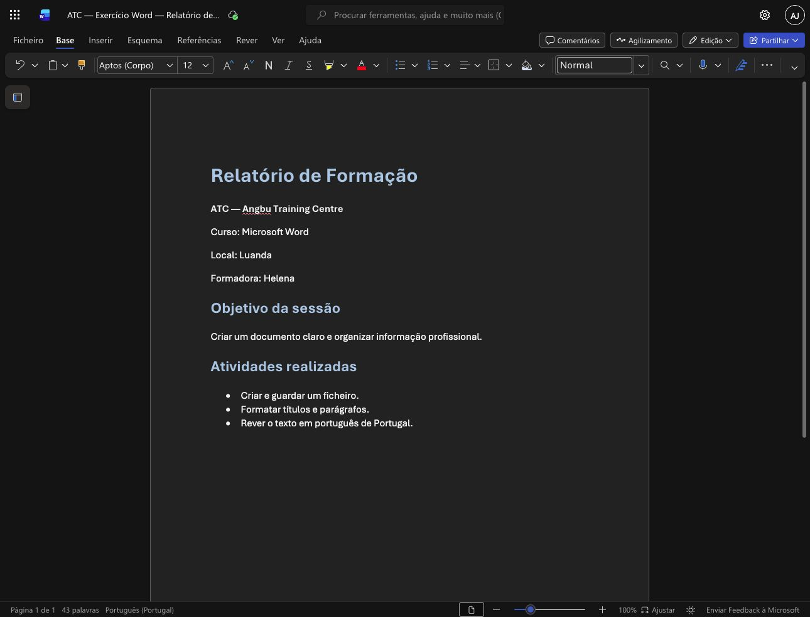
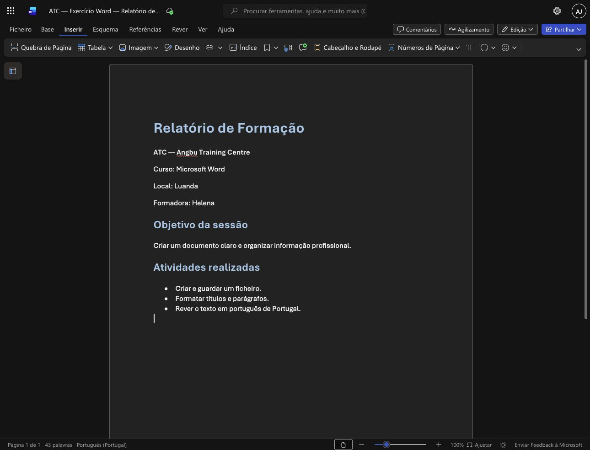

ATC · EXEMPLO 01Organizar um relatório profissional
O separador Base reúne os comandos de formatação e os estilos do documento.

Captura própria ATC · Microsoft Word para a Web · Português (Portugal).- Escreva o título e os dados da sessão.
- Aplique um estilo de título à primeira linha e aos subtítulos.
- Organize as atividades numa lista curta.
Verifique: Verifique se o relatório tem um título, secções e atividades fáceis de localizar.
ATC · EXEMPLO 02Encontrar os elementos para inserir
O separador Inserir permite acrescentar tabelas, imagens e números de página.

Captura própria ATC · Microsoft Word para a Web · Português (Portugal).- Abra o separador Inserir.
- Localize os comandos Tabela e Imagem.
- Escolha o comando adequado ao elemento que pretende adicionar.
Verifique: A captura mostra os comandos disponíveis; nenhum elemento novo foi inserido neste exemplo.